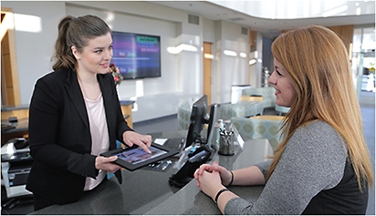
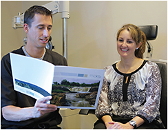

Before cataract surgery, a patient overheard two nurses discussing how much they liked Chinese cuisine. The patient joked with the nurse about how wonderful some sweet and sour chicken would taste as she was NPO since that morning.
We typically offer patients something to eat and drink after surgery, usually a muffin and some juice or coffee. However, the nurse, without mentioning it to the patient, surprised the patient and ordered the sweet and sour chicken, which arrived when surgery was complete.
The next day at her post-op, this patient kept repeating how amazed she was by the nurse’s act of kindness. “In this day and age, gestures at healthcare facilities like what occurred yesterday don’t happen,” the patient said. Our nurse seized a moment to provide an amazing experience the patient will not soon forget.
The term “customer experience” has dominated new business culture for years. New schools of thought on customer engagement, experience-based marketing and user experience have led to questions of whether enhancing customer experience leads to higher sales, greater customer loyalty and overall business health.
The front desk attendant at Vance Thompson Vision is an important tone setter for the patient’s experience.
Does improving the patient customer experience matter when people are responding to a medical need? What’s our real responsibility to these patients? We work so hard to serve our patients well and to have a financially healthy practice with a solid ROI, but is there really such a thing as ROE (return on experience)?
Even in our technology-driven practice, we’ve determined the true differentiator for our patients is how they feel they are treated. The simplest thing, such as listening to the patient, can lead to an opportunity that provides an amazing customer experience.
While we hire people who treat patients well, we also have processes that make the patient experience as positive as it can be — the patients’ impression and experience won’t be positive if the processes are not efficient. A commitment to delivering a quality patient experience impacts ROE as much as using the best technology.
We view our practice like a three-legged stool. The first leg is “always do the right thing.” This means every doctor and team member must consider the patients’ best interest and put their needs ahead of our own. For example, our doctors call each patient the night of surgery to check on them. Patients often have simple questions, but they don’t want to bother anyone. Because we called them, the question is answered and their mind is put at ease.
The second leg of the stool is “an uncompromising approach to technology.” If we believe a technology can help our patients achieve better and safer outcomes, we will acquire it. For example, we believe that femtosecond lasers play an important role in eye surgery, so we adopted them for LASIK and cataract surgery at an early stage.
The third leg is “customer experience.” Even if patients cannot tell if we are doing the right thing for them or whether we have the best technology, they can tell how they were treated and whether they felt cared for. We reinforce this “leg” every step of the way, supporting the other two legs.
To appropriately stage the customer experience, put yourself emotionally and psychologically into a patient’s shoes and walk through your facility. Try to determine what the patient will see, hear, smell and feel throughout the office.
Vance Thompson Vision expects its patients to be all smiles throughout their visit.
Start by walking through the front door. Are all areas tidy, organized and clean? Something as simple as providing up-to-date periodical literature shows your organization’s attention to detail. Clear all floors and rooms of debris, and make sure they are clean. Also, pay attention to how things are organized when you walk into a room.
Stage this organization towards your target audience. For example, we instituted personalized music choices in each examination and treatment room. These choices are written on each patient’s chart and automatically brought up at future visits so we do not have to ask more than once.
We believe serving people in their moment of vulnerability is a sacred trust that patients have put in us. Setting the stage for that trust starts when we answer the phone.
The phones in any business are the most important point of initial contact and, in some cases, the only point of contact. This entire interaction, regardless of its length, sets the tone for how other contacts and experiences will flow, giving the potential patient a sense of whether he or she wants to continue the relationship.
Also, the attendant at the front desk is an important tone-setter for the office, and therefore just as vital in making the patient feel welcome. Besides a warm greeting, patients should not get the sense they are being hurried or that staff are unorganized. The patient should feel that we are actually happy to serve them. For example, our front desk attendant offers to serve them coffee, water, or beverage of choice. Also, we provide iPads that patients can use throughout their time in our center.
This unrushed, you’re-the-only-patient mindset must permeate every encounter your staff has with all patients.
This extends to our facility’s on-stage/off-stage philosophy. On-stage is everything that a patient sees. Off-stage are mechanics running the organization. It may be chaotic and jumbled at times, but the goal is not to let the audience on stage see the true performance. So we keep on our on-stage “face” at all times when we interact with patients. This lets our audience see our confidence and makes them feel like they are in our home.
To maintain this positive on-stage presence, we instituted a specific timing system. Each person who interacts with a patient clocks in and out. This allows us to know where the patient is and which staff is with the patient while keeping track of the doctors. Then, we can estimate where they are and where they need to go next.
Another benefit of the timing system: keeping patients informed. No one likes to be left without knowledge of his potential wait. Offices can misstep on many facets of the patient experience, but patients won’t forgive you for disrespecting their time. If we anticipate a delay, this clock system allows the staff to easily analyze the current status of patient flow, estimate the amount of time the patient will wait and continually keep the patients up to date.
Patient experience checklist
To have a great customer experience in any environment, you first must be operationally excellent.
Here are some key aspects of the patient experience to analyze in your practice:
❑ Your Website
❑ How you answer your phone
❑ Your parking lot
❑ The signage outside your building and the message it communicates
❑ How you greet patients
❑ The staging in your welcome area (not waiting area)
❑ How your technicians communicate diagnostic testing
❑ Interactions with the provider
❑ Patient interaction after the exam
❑ Surveys and follow-up
The biggest indicator of future growth in any practice is your customer’s willingness to recommend. Use the results of surveys or live questioning after the exam. Those results should indicate that your customers want to share your services with their family members and friends.
Along with the patient experience, do not forget the guests that accompany them to their visits. This person may have taken time from work to drive the patient to her appointment and wait for her. What does the guest feel, see, hear and think as she experiences your facility?
Consider providing something for her to do. Offer her something to read, snack on and drink as well as the Internet in the welcome area. Make the guest comfortable, and keep her informed of her friend’s or family member’s wait times.
In the end, patients may not remember each staff member’s name, but they will remember how each one of us made them feel when they recall their experience in our clinic. We want this recollection to be positive, energy-filled yet calming.
Working hard to create a positive patient experience has been just as essential as our commitment to advanced technology, because it has made for a more joyful environment for our team and the patients, a perfect combination to do business. We have even gained employees through word of mouth due to the positive environment we create. It is amazing to see a patient’s face when he says, “I’ve never been treated this way in a medical environment. Thank you so much! I can’t wait to tell my friends.”
Not only does this make for a great work environment, but it also has a financial impact. When you create a patient experience that is so compelling, you touch your patients deeply and make them want to tell people about the experience in your practice.
We will always be committed to delivering both technology and the patient experience to the highest levels of excellence. OM
About the Authors | |
Vance Thompson, MD, is principal at Vance Thompson Vision in Sioux Falls, S.D., and assistant professor at the University of South Dakota School of Medicine. | |
John Berdahl, MD, of Vance Thompson Vision, specializes in advanced cataract, corneal and glaucoma and refractive surgery. | |
Alison Tendler, MD, of Vance Thompson Vision, specializes in cataract & lens implant surgery and refractive surgery. | |